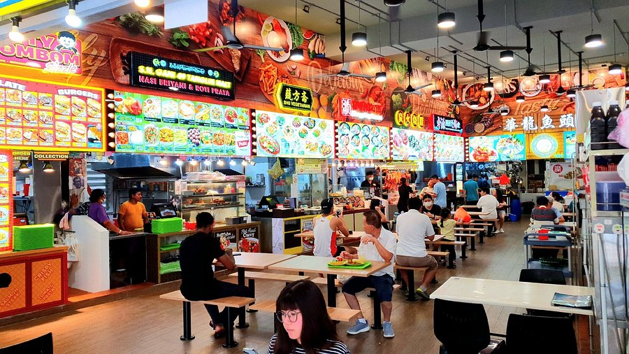
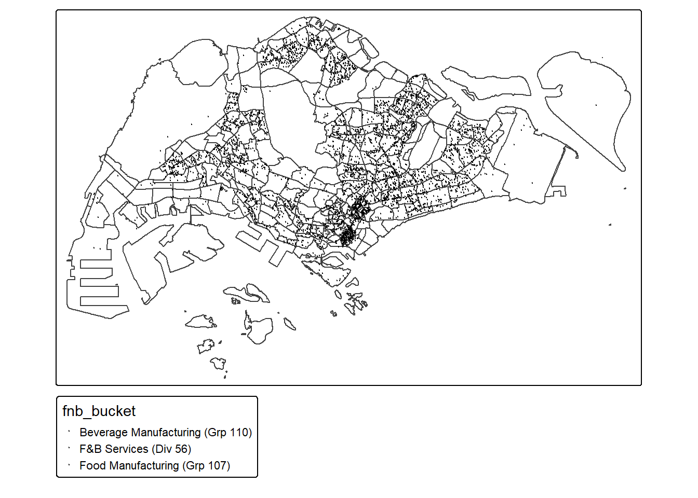
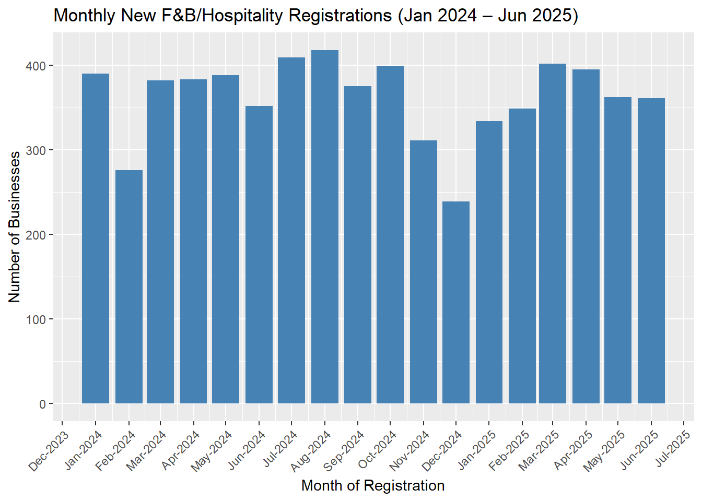
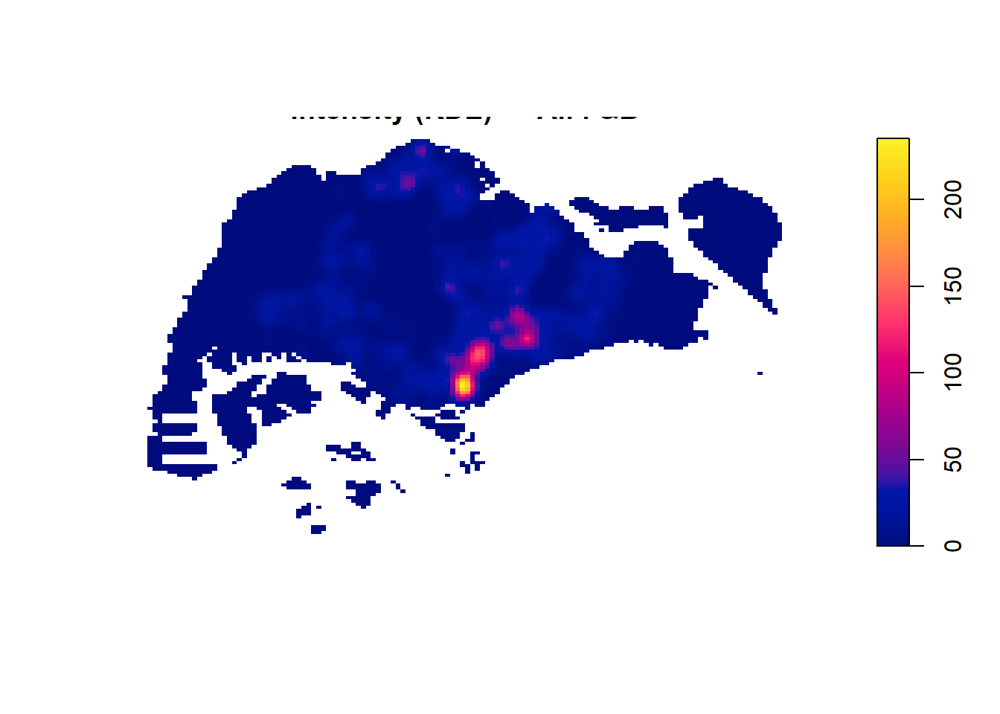
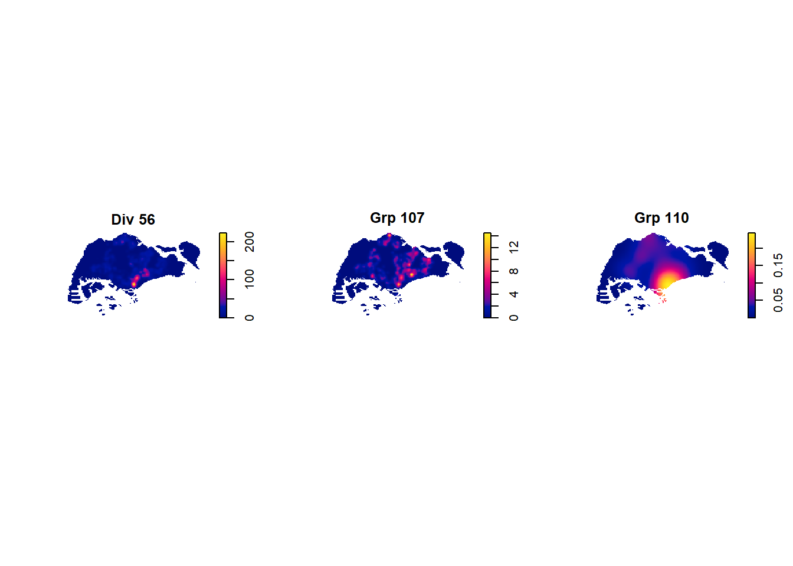
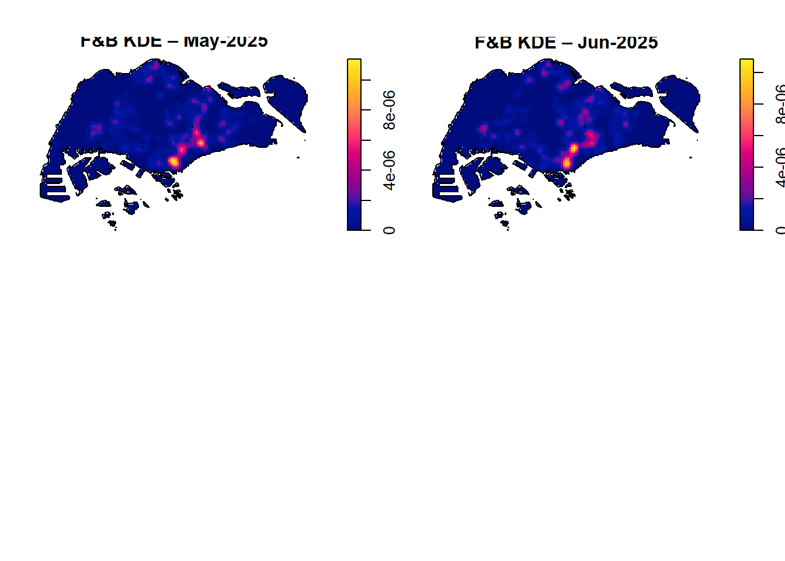
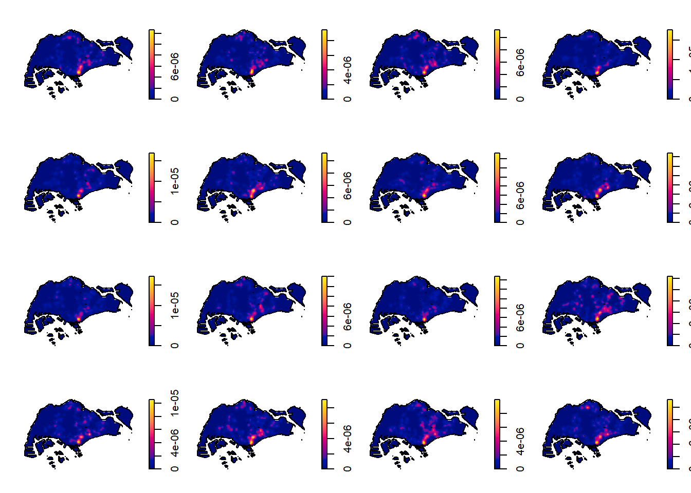
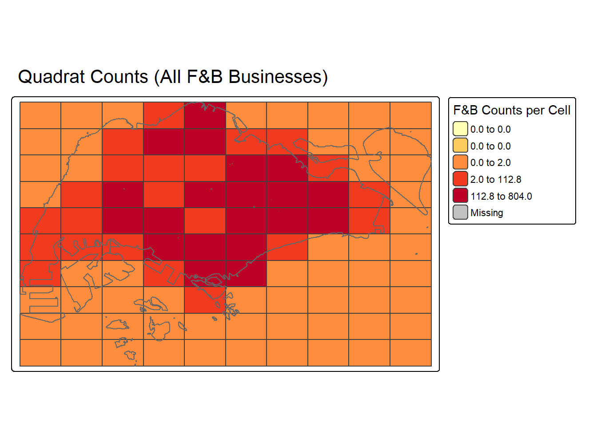
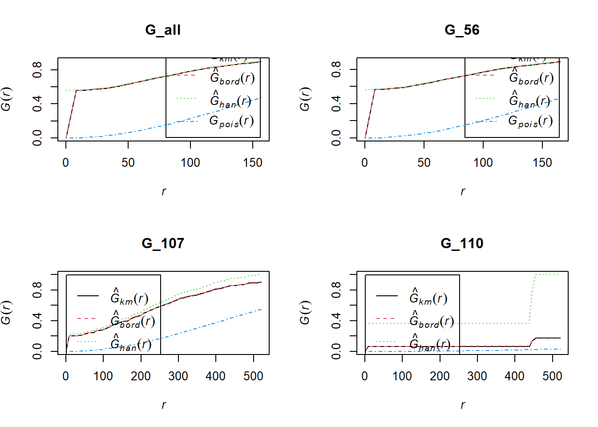
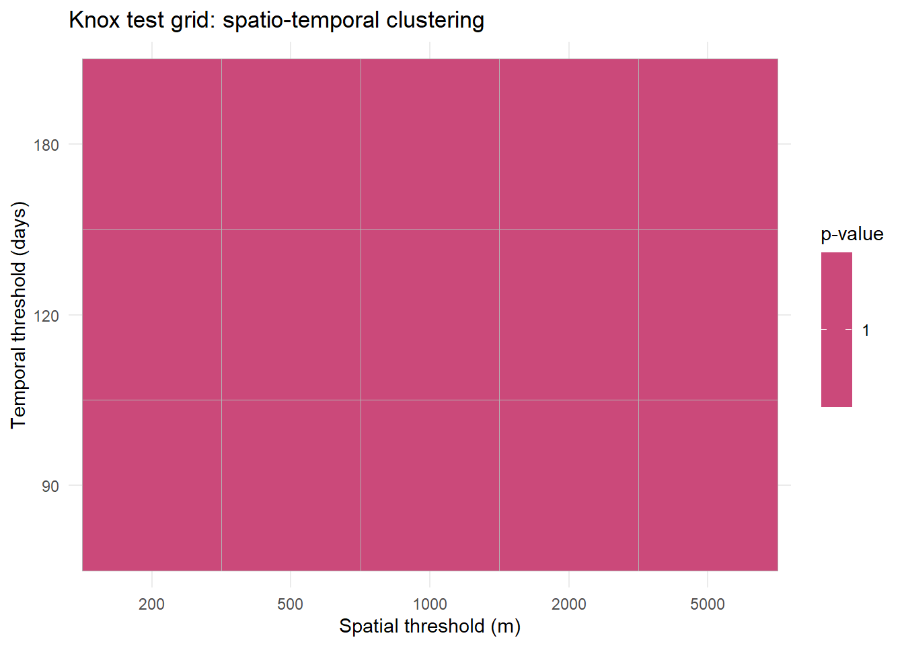

pacman::p_load(tidyverse, sf, spatstat, stpp, tmap, httr, lubridate, splancs, sfdep, surveillance)Take-home Exercise 1: Geospatial Analytics for Public Good
1 Overview

Inside a Hawker Center (via TripAdvisor)
The Food & Beverage (F&B) sector is a vital pillar of Singapore’s economy, contributing significantly to both employment and tourism-driven revenue. In 2024, international visitor arrivals reached about 16.5 million, and tourism receipts rose to S$29,781 million (or ~SGD 29.8 billion), a strong recovery to pre-pandemic levels. Among the components of tourism spend, expenditure on Food & Beverage increased by 6% year-on-year in January - September 2024. The F&B services sector also plays a major role domestically: for example, in July 2025, its sales reached S$1.0 billion, with fast food outlets and food caterers showing notable growth, and approximately a quarter of F&B sales happening online.
Beyond raw numbers, the sector deeply shapes everyday life—socializing, culture, lifestyle—through restaurants, hawker centers, cafés, bars, catering, etc. The dynamic interplay between F&B manufacturers, drink producers, and service-based outlets influences urban planning (where clusters of eating and dining pop up), business location decisions, land-use, and labour markets.
2 Getting Started
2.1 The Packages
In this exercise, we will use following packages:
| Package | Description |
|---|---|
| sf | Provides functions to manage, processing, and manipulate Simple Features, a formal geospatial data standard that specifies a storage and access model of spatial geometries such as points, lines, and polygons. |
| spatstat | Provides functions for spatial statistics with a strong focus on analysing spatial point patterns. |
| stpp | Provides statistical tools for analyzing the global and local second-order properties of spatio-temporal point processes. |
| tidyverse | Provides collection of functions for performing data science task such as importing, tidying, wrangling data and visualising data. |
| tmap | Provides functions for plotting cartographic quality static point patterns maps or interactive maps by using leaflet API. |
| httr | Provide a wrapper for the curl package, customised to the demands of modern web APIs. |
| lubridate | Provides a set of functions for working with date-times. |
| splancs | For display and analysis of spatial point pattern data. |
| sfdep | An interface to ‘spdep’ to integrate with ‘sf’ objects and the ‘tidyverse’. |
| surveillance | Statistical methods for the modeling and monitoring of time series of counts, proportions and categorical data, as well as for the modeling of continuous-time point processes of epidemic phenomena. |
2.2 The Data
2.2.1 Business Categories Overview
Using the Singapore Standard Industrial Classification (SSIC) 2020, three business categories were selected for analysis: Food and Beverage Service Activities (Division 56), Manufacture of Other Food Products (Group 107), and Manufacture of Beverages (Group 110). Together, they span the spectrum from food production and processing to retail consumption, providing a comprehensive view of how food-related businesses emerge and evolve across the city. Examining their spatial and temporal patterns allows us to understand not only where F&B establishments are located, but also how they interact with upstream manufacturers and beverage producers. This holistic perspective offers valuable insights into the clustering of economic activities, the shaping of commercial districts, and the role of the F&B ecosystem in supporting urban development and community life.
Below is the details of the business type selected:
56 – Food and Beverage Service Activities
- Division 56: Food and beverage service activities
Includes: Restaurants, cafés, fast food outlets, food courts, coffee shops, hawker centers, caterers, pubs, bars, nightclubs, and other drinking places.
Covers businesses primarily engaged in preparing meals, snacks, and drinks for immediate consumption.
107 – Manufacture of Other Food Products
Division 10: Manufacture of food products
Group 107: Manufacture of other food products
Includes:
1071 – Manufacture of bakery products (bread, biscuits, cakes, confectionery)
1074 – Manufacture of macaroni, noodles, vermicelli and related products
1075 – Manufacture of prepared meals and dishes (e.g., frozen dinners)
1076 – Manufacture of coffee, tea and related products
1079 – Manufacture of other food products n.e.c. (sauces, soya products, spices, chips, crackers, titbits)
110 – Manufacture of Beverages
Division 11: Manufacture of beverages
Group 110: Manufacture of beverages
Includes:
1101 – Distilling, rectifying and blending of spirits
1102 – Manufacture of wines
1103 – Manufacture of malt liquors and malt (beer, stout)
1104 – Manufacture of soft drinks, bottled/mineral waters, cordials, syrups, composite concentrates, and ice.
2.2.2 Datasets
| Dataset Name | Description | Format | Source |
|---|---|---|---|
| ACRA (Accounting and Corporate Regulatory Authority) Information on Corporate Entities | Datasets of registered entities in Singapore. (We will select business entities registered between 1st January 2024 to 30th June 2025.) | CSV | data.gov.sg |
| SSIC: Singapore Standard Industrial Classification (SSIC) | Official system for classifying economic activity of business establishments in Singapore. | XLSX | SSIC |
| Singapore Master Plan 2019 (URA) Zoning Data | Singapore’s land-use zones: residential, commercial, mixed-use, industrial. | GEOJSON | data.gov.sg |
2.3 Data Importing & Wrangling
2.3.1 Importing ACRA data
The ACRA Corporate Entities CSV files were imported into R using tidyverse. The first 24 columns were retained, covering entity identifiers, names, incorporation dates, SSIC codes, and addresses. This ensured consistency across all files as we are dropping the unnecessary fields such as fields with excessive missing values or fields with only single values.
folder_path <- "data/aspatial/ACRA"
file_list <- list.files(path = folder_path,
pattern = "^ACRA*.*\\.csv$",
full.names = TRUE)
acra_data <- file_list %>%
map_dfr(read_csv)glimpse(acra_data)Rows: 2,026,935
Columns: 53
$ uen <chr> "00022100K", "00031800X", "00043100A…
$ issuance_agency_id <chr> "ACRA", "ACRA", "ACRA", "ACRA", "ACR…
$ entity_name <chr> "A Y ABDUL RAHIMAN", "A M ABDULLAH S…
$ entity_type_description <chr> "Sole Proprietorship/ Partnership", …
$ business_constitution_description <chr> "Partnership", "Partnership", "Partn…
$ company_type_description <chr> "na", "na", "na", "na", "na", "na", …
$ paf_constitution_description <chr> "na", "na", "na", "na", "na", "na", …
$ entity_status_description <chr> "Terminated", "Terminated", "Termina…
$ registration_incorporation_date <date> 1974-10-09, 1974-10-12, 1974-09-20,…
$ uen_issue_date <date> 1974-10-09, 1974-10-12, 1974-09-20,…
$ address_type <chr> "LOCAL", "LOCAL", "LOCAL", "LOCAL", …
$ block <chr> "51", "93", "178", "21", "30", "38A"…
$ street_name <chr> "EAST COAST ROAD", "MARKET STREET", …
$ level_no <chr> "na", "10", "na", "na", "na", "na", …
$ unit_no <chr> "na", "01", "na", "na", "na", "na", …
$ building_name <chr> "na", "na", "na", "na", "na", "na", …
$ postal_code <chr> "428770", "0104", "0718", "0923", "4…
$ other_address_line1 <chr> "na", "na", "na", "na", "na", "na", …
$ other_address_line2 <chr> "na", "na", "na", "na", "na", "na", …
$ account_due_date <chr> "na", "na", "na", "na", "na", "na", …
$ annual_return_date <chr> "na", "na", "na", "na", "na", "na", …
$ primary_ssic_code <dbl> 47722, 46301, 68104, 56111, 47102, 6…
$ primary_ssic_description <chr> "na", "na", "na", "na", "na", "na", …
$ primary_user_described_activity <chr> "na", "na", "na", "na", "na", "na", …
$ secondary_ssic_code <chr> "na", "32909", "na", "56122", "na", …
$ secondary_ssic_description <chr> "na", "na", "na", "na", "na", "na", …
$ secondary_user_described_activity <chr> "na", "na", "na", "na", "na", "na", …
$ no_of_officers <dbl> 7, 6, 3, 1, 5, 2, 2, 1, 4, 2, 2, 1, …
$ former_entity_name1 <chr> "na", "na", "na", "na", "na", "na", …
$ former_entity_name2 <chr> "na", "na", "na", "na", "na", "na", …
$ former_entity_name3 <chr> "na", "na", "na", "na", "na", "na", …
$ former_entity_name4 <chr> "na", "na", "na", "na", "na", "na", …
$ former_entity_name5 <chr> "na", "na", "na", "na", "na", "na", …
$ former_entity_name6 <chr> "na", "na", "na", "na", "na", "na", …
$ former_entity_name7 <chr> "na", "na", "na", "na", "na", "na", …
$ former_entity_name8 <chr> "na", "na", "na", "na", "na", "na", …
$ former_entity_name9 <chr> "na", "na", "na", "na", "na", "na", …
$ former_entity_name10 <chr> "na", "na", "na", "na", "na", "na", …
$ former_entity_name11 <chr> "na", "na", "na", "na", "na", "na", …
$ former_entity_name12 <chr> "na", "na", "na", "na", "na", "na", …
$ former_entity_name13 <chr> "na", "na", "na", "na", "na", "na", …
$ former_entity_name14 <chr> "na", "na", "na", "na", "na", "na", …
$ former_entity_name15 <chr> "na", "na", "na", "na", "na", "na", …
$ uen_of_audit_firm1 <chr> "na", "na", "na", "na", "na", "na", …
$ name_of_audit_firm1 <chr> "na", "na", "na", "na", "na", "na", …
$ uen_of_audit_firm2 <chr> "na", "na", "na", "na", "na", "na", …
$ name_of_audit_firm2 <chr> "na", "na", "na", "na", "na", "na", …
$ uen_of_audit_firm3 <chr> "na", "na", "na", "na", "na", "na", …
$ name_of_audit_firm3 <chr> "na", "na", "na", "na", "na", "na", …
$ uen_of_audit_firm4 <chr> "na", "na", "na", "na", "na", "na", …
$ name_of_audit_firm4 <chr> "na", "na", "na", "na", "na", "na", …
$ uen_of_audit_firm5 <chr> "na", "na", "na", "na", "na", "na", …
$ name_of_audit_firm5 <chr> "na", "na", "na", "na", "na", "na", …The dataset consists of 2,026,935 rows and 53 columns.
2.3.2 Tidying ACRA data
Standardisation of Key Fields
Column names were renamed to a common schema (date, ssic_raw, postal_code). Dates were converted into proper R Date objects. SSIC codes were cleaned to numeric strings, and 2-digit (ssic_2d) and 3-digit (ssic_3d) prefixes were extracted. Postal codes were also padded to six digits for consistency.
Temporal Filtering
Only businesses registered between 01-Jan-2024 and 30-Jun-2025 were retained, aligning with the study’s spatio-temporal scope. Records with missing or invalid dates were excluded.
Business Type Selection
The dataset was filtered to include only the Food and Beverage / Hospitality categories: Division 56 – Food & Beverage Service Activities, Group 107 – Manufacture of Other Food Products, Group 110 – Manufacture of Beverages
Code
date_min <- as_date("2024-01-01")
date_max <- as_date("2025-06-30")
acra_all_fnb <- acra_data %>%
# keep the first 24 cols
select(1:24) %>%
# commonize column names
rename(
date = registration_incorporation_date,
ssic_raw = primary_ssic_code,
postal_code = postal_code
) %>%
mutate(
# dates
date = as_date(date),
# SSIC as character
ssic_raw = as.character(ssic_raw),
ssic_raw = str_replace_all(ssic_raw, "[^0-9]", ""),
ssic_2d = str_sub(ssic_raw, 1, 2),
ssic_3d = str_sub(ssic_raw, 1, 3),
# clean postal code to 6-digit with zeros
postal_code = str_pad(postal_code, width = 6, side = "left", pad = "0")
) %>%
filter(!is.na(date), date >= date_min, date <= date_max) %>%
# target Division 56 OR Group 107 OR Group 110
filter(ssic_2d == "56" | ssic_3d %in% c("107", "110")) %>%
# time fields
mutate(
YEAR = lubridate::year(date),
MONTH_NUM = lubridate::month(date),
MONTH_ABBR = lubridate::month(date, label = TRUE, abbr = TRUE),
fnb_bucket = case_when(
ssic_2d == "56" ~ "F&B Services (Div 56)",
ssic_3d == "107" ~ "Food Manufacturing (Grp 107)",
ssic_3d == "110" ~ "Beverage Manufacturing (Grp 110)",
TRUE ~ "Other"
)
)Sanity Checks & Subsets
Basic counts by fnb_bucket were generated to confirm category distribution. Monthly registration summaries were produced to validate temporal coverage. Separate data frames (biz_56, biz_107, biz_110) were created for more detailed subgroup analysis.
# Counts by bucket
acra_all_fnb %>% count(fnb_bucket, sort = TRUE)# A tibble: 3 × 2
fnb_bucket n
<chr> <int>
1 F&B Services (Div 56) 5758
2 Food Manufacturing (Grp 107) 737
3 Beverage Manufacturing (Grp 110) 30# Monthly registrations for later plotting
acra_all_fnb %>%
count(YYYYMM = floor_date(date, "month"), fnb_bucket) %>%
arrange(YYYYMM, fnb_bucket)# A tibble: 52 × 3
YYYYMM fnb_bucket n
<date> <chr> <int>
1 2024-01-01 Beverage Manufacturing (Grp 110) 2
2 2024-01-01 F&B Services (Div 56) 337
3 2024-01-01 Food Manufacturing (Grp 107) 51
4 2024-02-01 Beverage Manufacturing (Grp 110) 1
5 2024-02-01 F&B Services (Div 56) 236
6 2024-02-01 Food Manufacturing (Grp 107) 39
7 2024-03-01 Beverage Manufacturing (Grp 110) 1
8 2024-03-01 F&B Services (Div 56) 338
9 2024-03-01 Food Manufacturing (Grp 107) 43
10 2024-04-01 Beverage Manufacturing (Grp 110) 1
# ℹ 42 more rowsCode
# separate data frames for each bucket
biz_56 <- acra_all_fnb %>% filter(ssic_2d == "56")
biz_107 <- acra_all_fnb %>% filter(ssic_3d == "107")
biz_110 <- acra_all_fnb %>% filter(ssic_3d == "110")Code
# Date column named `date` and a month column for plotting later:
acra_all_fnb <- acra_all_fnb %>%
mutate(
date = as.Date(date),
month = floor_date(date, "month"),
postal_code = stringr::str_pad(postal_code, 6, pad = "0")
)
biz_56 <- biz_56 %>% mutate(postal_code = stringr::str_pad(postal_code, 6, pad = "0"))
biz_107 <- biz_107 %>% mutate(postal_code = stringr::str_pad(postal_code, 6, pad = "0"))
biz_110 <- biz_110 %>% mutate(postal_code = stringr::str_pad(postal_code, 6, pad = "0"))2.3.3 Geocoding
Extract Unique Postcodes
Unique six-digit postal codes were extracted from the ACRA dataset. To ensure consistency, codes were padded with leading zeros where necessary and invalid entries (missing or non-numeric) were excluded.
Query the OneMap API
Each postcode was sent to the OneMap Singapore API using the code chunk below. The API returned address details and coordinates (X, Y in SVY21 projection; LATITUDE, LONGITUDE in WGS84). Postcodes with no matches were logged separately for later review.
Code
rds_found <- "data/rds/geocode_found.rds"
rds_not_found <- "data/rds/geocode_not_found.rds"
if (file.exists(rds_found) && file.exists(rds_not_found)) {
found <- readRDS(rds_found)
not_found <- readRDS(rds_not_found)
} else {
postcodes <- unique(acra_all_fnb$postal_code)
url <- "https://onemap.gov.sg/api/common/elastic/search"
found <- data.frame()
not_found <- data.frame(postcode = character())
for (pc in postcodes) {
query <- list(
searchVal = pc,
returnGeom = "Y",
getAddrDetails = "Y",
pageNum = "1"
)
res <- GET(url, query = query)
json <- content(res)
if(json$found != 0) {
df <- as.data.frame(json$results, stringsAsFactors = FALSE)
df$input_postcode <- pc
found <- bind_rows(found, df)
} else {
not_found <- bind_rows(not_found, data.frame(postcode = pc))
}
}
dir.create("data", showWarnings = FALSE)
saveRDS(found, rds_found)
saveRDS(not_found, rds_not_found)
}Append Geocoding Results
Geocoding was performed by extracting unique six-digit postal codes from the ACRA dataset and submitting them to the OneMap Singapore API. The API returned both address details and geographic coordinates, which were then joined back to the business records. Invalid or missing coordinates were cleaned, and duplicates were removed to ensure data quality. The final datasets were converted into spatial features (sf objects) in the SVY21 projection (EPSG:3414), enabling integration with planning boundaries and spatial analysis. To ensure reproducibility and avoid repeated API calls, the geocoded datasets and unresolved cases were saved as .rds files.
found <- found %>%
#X/Y from OneMap are SVY21 (EPSG:3414); coerce to numeric
mutate(
X = suppressWarnings(as.numeric(X)),
Y = suppressWarnings(as.numeric(Y))
) %>%
# keep the essential columns
select(1:10)Code
acra_all_fnb <- acra_all_fnb %>% left_join(found, by = c("postal_code" = "POSTAL"))
biz_56 <- biz_56 %>% left_join(found, by = c("postal_code" = "POSTAL"))
biz_107 <- biz_107 %>% left_join(found, by = c("postal_code" = "POSTAL"))
biz_110 <- biz_110 %>% left_join(found, by = c("postal_code" = "POSTAL"))Code
df_to_sf <- function(df, id_col = NULL) {
df2 <- df %>%
mutate(across(any_of(c("X","Y","LONGITUDE","LATITUDE")),
~ suppressWarnings(as.numeric(.x))))
if (all(c("X","Y") %in% names(df2))) {
df2 <- df2 %>% filter(!is.na(X), !is.na(Y))
if (!is.null(id_col) && id_col %in% names(df2)) {
df2 <- df2 %>% group_by(.data[[id_col]]) %>% slice(1) %>% ungroup()
}
st_as_sf(df2, coords = c("X","Y"), crs = 3414)
} else if (all(c("LONGITUDE","LATITUDE") %in% names(df2))) {
df2 <- df2 %>% filter(!is.na(LONGITUDE), !is.na(LATITUDE))
if (!is.null(id_col) && id_col %in% names(df2)) {
df2 <- df2 %>% group_by(.data[[id_col]]) %>% slice(1) %>% ungroup()
}
st_as_sf(df2, coords = c("LONGITUDE","LATITUDE"), crs = 4326)
} else {
stop("No coordinate columns found. Expected X/Y or LONGITUDE/LATITUDE. Present: ",
paste(names(df2), collapse = ", "))
}
}
acra_all_fnb_sf <- df_to_sf(acra_all_fnb, id_col = "uen")
biz_56_sf <- df_to_sf(biz_56, id_col = "uen")
biz_107_sf <- df_to_sf(biz_107, id_col = "uen")
biz_110_sf <- df_to_sf(biz_110, id_col = "uen")Code
biz_missing <- acra_all_fnb %>%
mutate(X = suppressWarnings(as.numeric(X)), Y = suppressWarnings(as.numeric(Y))) %>%
filter(is.na(X) | is.na(Y))
write_rds(biz_missing, "data/rds/biz_missing_coords.rds")3 Exploratory Observation
Before conducting the Spatial Point Pattern Analysis, we will first perform visualizing to better understand the underlying patterns and distributions in the data.
We will import the Singapore Master Plan 2019 (URA) Zoning Data:
subzones <- st_read("data/geospatial/MasterPlan2019SubzoneBoundaryNoSeaGEOJSON.geojson") %>%
st_transform(crs = 3414)Reading layer `MasterPlan2019SubzoneBoundaryNoSeaGEOJSON' from data source
`C:\sonphamsmu\isss626-aug2526\Take-home_Ex\Take-home_Ex1\data\geospatial\MasterPlan2019SubzoneBoundaryNoSeaGEOJSON.geojson'
using driver `GeoJSON'
Simple feature collection with 332 features and 2 fields
Geometry type: MULTIPOLYGON
Dimension: XY
Bounding box: xmin: 103.6057 ymin: 1.158699 xmax: 104.0885 ymax: 1.470775
Geodetic CRS: WGS 84acra_all_fnb_sf <- st_join(acra_all_fnb_sf, subzones)Visualize the businesses on map:
tmap_mode("plot")
tm_shape(subzones) + tm_borders() +
tm_shape(acra_all_fnb_sf) + tm_dots(col = "fnb_bucket", size = 0.05)
Reveal the distribution of newly registered businesses by month:
Code
monthly_counts <- acra_all_fnb %>%
mutate(date = as.Date(date), month = floor_date(date, "month")) %>%
count(month)
ggplot(monthly_counts, aes(x = month, y = n)) +
geom_col(fill = "steelblue") +
scale_x_date(date_labels = "%b-%Y", date_breaks = "1 month") +
labs(x = "Month of Registration", y = "Number of Businesses",
title = "Monthly New F&B/Hospitality Registrations (Jan 2024 – Jun 2025)") +
theme(axis.text.x = element_text(angle = 45, hjust = 1))
Observation
- Monthly Trends: Registrations remained fairly steady at ~350–420 businesses per month. Noticeable declines occurred in Feb 2024 and Dec 2024, likely due to holiday or festive effects.
- Rebounds: Peaks in Aug 2024 and Mar 2025 suggest post-holiday rebounds.
- Spatial Clustering: Businesses are densely concentrated in central and eastern regions (Downtown, Geylang, Bedok, Tampines). Western catchment, Lim Chu Kang, and offshore islands show minimal registrations.
- Category Mix: Service-oriented F&B dominate urban areas, while manufacturing clusters are more peripheral.
4 First-order Spatial and Spatio-Temporal Patterns Analysis
4.1 Computing kernel density estimation (KDE)
We will compute the kernel density estimate (KDE) for each business types using bw.ppl:
Code
to_ppp <- function(sf_points, window_W) {
sf_points <- st_transform(sf_points, 3414)
coords <- st_coordinates(sf_points)
ppp(x = coords[,1], y = coords[,2], window = window_W, checkdup = FALSE)
}
ppp_all <- to_ppp(acra_all_fnb_sf, sg_owin)
ppp_56 <- to_ppp(biz_56_sf, sg_owin)
ppp_107 <- to_ppp(biz_107_sf, sg_owin)
ppp_110 <- to_ppp(biz_110_sf, sg_owin)All F&B Businesses:
ppp_all_km <- rescale.ppp(ppp_all, 1000, "km")
bw_all_ppl <- density(ppp_all_km,
sigma=bw.ppl,
edge=TRUE,
kernel="gaussian")
plot(bw_all_ppl, main = "Intensity (KDE) — All F&B")
Observation
Hotspot clearly visible in central Singapore (CBD / Orchard / Bugis area) — shown by the yellow–red cluster.
Other moderate hotspots appear in the east (Tampines, Pasir Ris) and north-east (Hougang, Serangoon).
The west and north (Jurong, Woodlands, Yishun) show lower but non-zero intensity.
Interpretation: F&B registrations are heavily concentrated in commercial core and mature regional centers, consistent with population density and retail activity.
By business group:
Code
ppp_56_km <- rescale.ppp(ppp_56, 1000, "km")
ppp_107_km <- rescale.ppp(ppp_107, 1000, "km")
ppp_110_km <- rescale.ppp(ppp_110, 1000, "km")
bw_56_ppl <- density(ppp_56_km,
sigma=bw.ppl,
edge=TRUE,
kernel="gaussian")
bw_107_ppl <- density(ppp_107_km,
sigma=bw.ppl,
edge=TRUE,
kernel="gaussian")
bw_110_ppl <- density(ppp_110_km,
sigma=bw.ppl,
edge=TRUE,
kernel="gaussian")
par(mfrow=c(1,3))
plot(bw_56_ppl, main = "Div 56")
plot(bw_107_ppl, main = "Grp 107")
plot(bw_110_ppl, main = "Grp 110")
Takeaways
Div 56 >> Grp 107 >> Grp 110 in terms of density scale.
All three categories cluster in/around central Singapore, but with different intensity:
F&B (Div 56) → very widespread, many neighborhoods.
Food Manufacturing (Grp 107) → narrow CBD/airport-focused.
Beverages Manufacturing (Grp 110) → very sparse, niche clustering.
This suggest F&B is saturated in the core, while FM is more tight, and BM remain specialized.
4.2 Spatio-Temporal KDE Mapping
Visualizing New F&B/Hospitality Registrations by Month
Code
acra_all_fnb_sf <- acra_all_fnb_sf %>%
mutate(date = as.Date(date),
month = floor_date(date, "month"))
months_seq <- seq(as.Date("2024-01-01"), as.Date("2025-06-01"), by = "1 month")
month_levels <- format(months_seq, "%b-%Y")
acra_all_fnb_sf <- acra_all_fnb_sf %>%
mutate(month_f = format(month, "%b-%Y")) %>%
filter(month %in% months_seq) %>%
mutate(month_f = factor(month_f, levels = month_levels)) %>%
filter(!is.na(month_f))
ggplot(acra_all_fnb_sf) +
geom_sf(size = 0.1) +
geom_sf(data = sg_bound, fill = NA, color = "grey50", linewidth = 0.2, inherit.aes = FALSE) +
facet_wrap(~ month_f, ncol = 4) +
labs(title = "New F&B/Hospitality Registrations by Month",
x = NULL, y = NULL) +
theme_minimal(base_size = 10)
Code
#monthly points
pts <- st_transform(acra_all_fnb_sf, 3414) |>
filter(!is.na(date)) |>
mutate(month = floor_date(date, "month"))
#KDE for a given month
kde_one_month <- function(sf_points, window, sigma = 500) {
M <- st_coordinates(sf_points)
if (nrow(M) < 3) return(NULL)
p <- ppp(M[,1], M[,2], window = window)
density(p, sigma = sigma, edge = TRUE)
}
# KDE for one month
kde_one_month <- function(sf_points, window, sigma = 500) {
M <- st_coordinates(sf_points)
if (nrow(M) < 3) return(NULL)
p <- ppp(M[,1], M[,2], window = window)
density(p, sigma = sigma, edge = TRUE)
}
# KDEs for all 18 months
kde_by_month <- lapply(months_seq, function(m0) {
m_pts <- pts |> filter(month == m0)
kde_one_month(m_pts, sg_owin, sigma = 500)
})
names(kde_by_month) <- month_levels
plot_kde_grid <- function(kde_list, labels, idx, nrow = 4, ncol = 4, main_prefix = "KDE") {
old_par <- par(no.readonly = TRUE)
on.exit(par(old_par))
par(mfrow = c(nrow, ncol), mar = c(1.5, 1.5, 2, 1))
for (i in idx) {
if (i > length(kde_list)) { frame(); next }
z <- kde_list[[i]]
ttl <- labels[i]
if (is.null(z)) {
frame()
title(paste0(ttl, "\n(no data)"), cex.main = 0.9)
} else {
plot(z, main = paste0(main_prefix, " – ", ttl))
plot(sg_owin, add = TRUE)
}
}
}
plot_kde_grid(kde_by_month, month_levels, idx = 1:16, nrow = 4, ncol = 4, main_prefix = "F&B KDE")
Code
plot_kde_grid(kde_by_month, month_levels, idx = 17:18, nrow = 2, ncol = 2, main_prefix = "F&B KDE")
Note
Spatio-temporal KDE mapping (Jan 2024 – Jun 2025) shows that new F&B and manufacturing businesses consistently cluster in Singapore’s central region, with intermittent strengthening in regional centres such as Tampines and Jurong East. The spatial pattern is stable across time, with only intensity fluctuating, suggesting sustained central dominance but gradual suburban spillover.
4.3 Quadrat counts & Chi-squared test of CSR using quadrat counts
Q <- quadratcount(ppp_all, nx = 10, ny = 10)
plot(Q, main = "Quadrat counts – All F&B"); plot(ppp_all, add = TRUE, pch=20, cex=.2)
quadrat.test(ppp_all, nx = 10, ny = 10)
Chi-squared test of CSR using quadrat counts
data: ppp_all
X2 = 10005, df = 74, p-value < 2.2e-16
alternative hypothesis: two.sided
Quadrats: 75 tiles (irregular windows)
Conclusion
Reject CSR: The observed pattern is not random; instead, it reflects significant clustering and spatial heterogeneity.
Choropleth map:
Code
pts_all <- st_transform(acra_all_fnb_sf, 3414)
bound <- st_as_sf(sg_bound) |> st_transform(3414)
grid <- st_make_grid(bound, n = c(10, 10), square = TRUE) |>
st_as_sf() |>
mutate(id = row_number())
cnt <- lengths(st_intersects(grid, pts_all))
Qsf <- grid |>
mutate(
counts = cnt,
area_km2 = as.numeric(st_area(grid)) / 1e6,
dens_km2 = counts / area_km2
)
tmap_mode("plot")
tm_shape(Qsf) +
tm_polygons("counts", palette = "YlOrRd", style = "quantile",
title = "F&B Counts per Cell") +
tm_shape(bound) + tm_borders(col = "grey40") +
tm_layout(main.title = "Quadrat Counts (All F&B Businesses)",
legend.outside = TRUE)
Note
Central quadrats (esp. CBD, Orchard, Bugis, and parts of Geylang) have very high counts.
Peripheral quadrats (northern/northwest like Lim Chu Kang, southern islands, western industrial areas) have very few or zero businesses.
The distribution is highly uneven, with clustering in central and regional hubs.
Quadrat analysis of all F&B businesses reveals strong spatial heterogeneity. Counts are heavily concentrated in central quadrats (CBD, Orchard, Geylang), while peripheral quadrats often contain few or no businesses. The Chi-squared test of CSR (X² = 10,005, p < 0.001) strongly rejects randomness, confirming that F&B business locations are spatially clustered rather than evenly or randomly distributed.
5 Second-order Spatial and Spatio-Temporal Patterns Analysis
5.1 Clark-Evan Test for Nearest Neighbour Analysis
We will perform the Clark-Evans test of aggregation for a spatial point pattern using the clarkevans.test() function from the spatstat package.
Test Hypotheses
Ho = The distribution of F&B businesses are randomly distributed.
H1= The distribution of F&B businesses are not randomly distributed.
The 95% confident interval will be used.
clarkevans.test(ppp_all, correction="none", clipregion="sg_owin", alternative=c("clustered"), method="MonteCarlo", nsim=99)
Clark-Evans test
No edge correction
Monte Carlo test based on 99 simulations of CSR with fixed n
data: ppp_all
R = 0.32706, p-value = 0.01
alternative hypothesis: clustered (R < 1)
Conclusion
Reject H₀. The distribution of F&B businesses is statistically significantly clustered, not random. This clustering is likely tied to underlying factors such as high population density in urban areas or specific government’s planning.
5.2 Spatial Point Patterns Analysis Methods
We will perform some SPPA methods to confirm on the above takeaways.
G-function (nearest-neighbour distribution)
Code
pp_range_all <- ppp_all
lambda <- intensity(ppp_all)
r_nn <- 1/(2*sqrt(lambda))
rmax <- 3 * r_nn
rseq <- seq(0, rmax, length.out = 64) G_all <- Gest(ppp_all, r=rseq)
G_56 <- Gest(ppp_56, r=rseq)
G_107 <- Gest(ppp_107, r=rseq)
G_110 <- Gest(ppp_110, r=rseq)
par(mfrow=c(2,2))
plot(G_all)
plot(G_56)
plot(G_107)
plot(G_110)
Note
These plots confirms that overall F&B/manufacturing businesses, especially restaurants (Div 56), show strong clustering at small distances, consistent with dense food hubs and mall-based concentration.
Food Manufacturing (Grp 107) shows clustering at broader scales. (100–300 m)
Beverages Manufacturing (Grp 110) appear more randomly distributed due to their limited counts.
Pair correlation (local interactions)
pcf_all <- pcf(ppp_all, r=rseq, correction="translation")
pcf_56 <- pcf(ppp_56, r=rseq, correction="translation")
pcf_107 <- pcf(ppp_107, r=rseq, correction="translation")
pcf_110 <- pcf(ppp_110, r=rseq, correction="translation")
par(mfrow=c(2,2))
plot(pcf_all)
plot(pcf_56)
plot(pcf_107)
plot(pcf_110)
Note
Pair correlation functions (PCF) again confirm strong short-range clustering. (Div 56) are highly concentrated within 0–50 m, (Grp 107) shows clustering at broader scales (up to ~200 m), (Grp 110) display weaker or near-random distribution.
Inhomogeneous K-function
Code
bw_all_dg <- bw.diggle(ppp_all)
rho_all <- density(ppp_all)
Ki_all <- Kinhom(ppp_all, lambda = rho_all)
bw_56_dg <- bw.diggle(ppp_56)
rho_56 <- density(ppp_56)
Ki_56 <- Kinhom(ppp_56, lambda = rho_56)
bw_107_dg <- bw.diggle(ppp_107)
rho_107 <- density(ppp_107)
Ki_107 <- Kinhom(ppp_107, lambda = rho_107)
bw_110_dg <- bw.diggle(ppp_110)
rho_110 <- density(ppp_110)
Ki_110 <- Kinhom(ppp_110, lambda = rho_110)
par(mfrow=c(2,2))
plot(Ki_all, main = "Inhomogeneous K – All F&B")
plot(Ki_56, main = "Div 56")
plot(Ki_107, main = "Grp 107")
plot(Ki_110, main = "Grp 110")
Note
F&B businesses and restaurants (Div 56) remain significantly clustered at local-to-regional scales (up to ~3 km). (Grp 107) show weaker clustering, visible mainly at broader scales (>4 km). (Grp 110) appear nearly random.
5.3 Spatio-temporal Point Patterns Analysis Methods
We will reveal businesses clustering in both space and time simultaneously.
Homogeneous STIK Method
Code
sg_bound <- sg_bound %>%
st_union() %>%
st_transform(3414)
s.region <- st_coordinates(sg_bound)[, 1:2]
pts_sf <- st_transform(acra_all_fnb_sf, 3414) |>
filter(!is.na(date))
XY <- st_coordinates(pts_sf)
t0 <- min(as.Date(pts_sf$date), na.rm = TRUE)
tday <- as.numeric(as.Date(pts_sf$date) - t0)
xyt <- as.3dpoints(x = XY[,1], y = XY[,2], t = tday)
u <- seq(0, 1500, by = 100)
v <- seq(0, 90, by = 7) #Homogeneous STIK (quick baseline)
stik_hom <- STIKhat(
xyt = xyt,
s.region = s.region,
t.region = range(tday, na.rm = TRUE),
dist = u,
times = v,
correction = "isotropic"
)
plotK(stik_hom, type = "contour", legend = TRUE, main = "STIK (homogeneous)")
Note
Homogeneous STIK analysis for all F&B businesses indicates that spatio-temporal clustering is not clear at small scales (≤500 m, ≤30 days). Clustering becomes evident at broader scales, with businesses tending to co-locate within 1–2 km and within 1–3 months of each other. This suggests that new registrations emerge in bursts at the neighbourhood or regional level, rather than in highly localised, short-term clusters.
Knox Space–Time Interaction Method
We applied the Knox test across a grid of spatial (200 m – 5 km) and temporal (90 – 180 days) thresholds.
Code
pts_knox <- pts_sf |>
mutate(t_days = as.numeric(date - min(date, na.rm = TRUE)))
XY <- st_coordinates(pts_knox)
T <- as.numeric(pts_knox$date - min(pts_knox$date))
knox_result <- knox(
coords = XY,
times = T,
ds = 500,
dt = 30,
method = "bootstrap",
nsim = 199,
eps.s = 1e-6,
eps.t = 1e-6
).......................................................................................................................................................................................................................................................................................................................................................................................................................................................................................................................................................................................................................................................................................................................................................................................................................................................................................................................................................................................................................................Code
knox_result
Knox test with simulated p-value
data: dt = 30 and ds = 500
number of close pairs = 0, B = 999, p-value = 1
alternative hypothesis: true number is greater than 0
contingency table:
ds
dt <= 1e-06 > 1e-06
<= 1e-06 0 0
> 1e-06 0 1Code
ds_vals <- c(200, 500, 1000, 2000, 5000)
dt_vals <- c(90, 120, 180)
knox_grid <- expand.grid(ds = ds_vals, dt = dt_vals)
results <- apply(knox_grid, 1, function(row) {
k <- knox(
coords = XY,
times = T,
ds = row[["ds"]],
dt = row[["dt"]],
method = "bootstrap",
nsim = 199,
eps.s = 1e-6, eps.t = 1e-6
)
c(ds = row[["ds"]], dt = row[["dt"]],
obs = k$statistic["observed"],
exp = k$statistic["expected"],
p = k$p.value)
}).......................................................................................................................................................................................................................................................................................................................................................................................................................................................................................................................................................................................................................................................................................................................................................................................................................................................................................................................................................................................................................................
.......................................................................................................................................................................................................................................................................................................................................................................................................................................................................................................................................................................................................................................................................................................................................................................................................................................................................................................................................................................................................................................
.......................................................................................................................................................................................................................................................................................................................................................................................................................................................................................................................................................................................................................................................................................................................................................................................................................................................................................................................................................................................................................................
.......................................................................................................................................................................................................................................................................................................................................................................................................................................................................................................................................................................................................................................................................................................................................................................................................................................................................................................................................................................................................................................
.......................................................................................................................................................................................................................................................................................................................................................................................................................................................................................................................................................................................................................................................................................................................................................................................................................................................................................................................................................................................................................................
.......................................................................................................................................................................................................................................................................................................................................................................................................................................................................................................................................................................................................................................................................................................................................................................................................................................................................................................................................................................................................................................
.......................................................................................................................................................................................................................................................................................................................................................................................................................................................................................................................................................................................................................................................................................................................................................................................................................................................................................................................................................................................................................................
.......................................................................................................................................................................................................................................................................................................................................................................................................................................................................................................................................................................................................................................................................................................................................................................................................................................................................................................................................................................................................................................
.......................................................................................................................................................................................................................................................................................................................................................................................................................................................................................................................................................................................................................................................................................................................................................................................................................................................................................................................................................................................................................................
.......................................................................................................................................................................................................................................................................................................................................................................................................................................................................................................................................................................................................................................................................................................................................................................................................................................................................................................................................................................................................................................
.......................................................................................................................................................................................................................................................................................................................................................................................................................................................................................................................................................................................................................................................................................................................................................................................................................................................................................................................................................................................................................................
.......................................................................................................................................................................................................................................................................................................................................................................................................................................................................................................................................................................................................................................................................................................................................................................................................................................................................................................................................................................................................................................
.......................................................................................................................................................................................................................................................................................................................................................................................................................................................................................................................................................................................................................................................................................................................................................................................................................................................................................................................................................................................................................................
.......................................................................................................................................................................................................................................................................................................................................................................................................................................................................................................................................................................................................................................................................................................................................................................................................................................................................................................................................................................................................................................
.......................................................................................................................................................................................................................................................................................................................................................................................................................................................................................................................................................................................................................................................................................................................................................................................................................................................................................................................................................................................................................................Code
knox_df <- as.data.frame(t(results))
ggplot(knox_df, aes(x = factor(ds), y = factor(dt), fill = p)) +
geom_tile(color = "grey70") +
scale_fill_viridis_c(option = "plasma", direction = -1) +
labs(x = "Spatial threshold (m)", y = "Temporal threshold (days)",
fill = "p-value",
title = "Knox test grid: spatio-temporal clustering") +
theme_minimal()
Note
In all cases, the number of observed space–time pairs did not exceed expectation under independence (p ≈ 1). This indicates that while business registrations are spatially clustered (as shown by quadrat counts, KDE, G- and K-function analyses), the timing of registrations is largely independent of spatial proximity. In other words, businesses open in the same hotspots (CBD, regional centres), but not in bursts within short temporal windows. Spatio-temporal interaction only emerged weakly at broader scales in the STIK analysis (1–2 km, 1–3 months), suggesting neighbourhood-level clustering over longer periods rather than micro-scale space–time surges.
6 Discussion of Results and Implications for Urban Planning
6.1 Results from Analyses
The spatial analysis of new F&B and manufacturing businesses in Singapore (Jan 2024–Jun 2025) provides strong evidence of non-random, clustered distribution patterns.
First-order analysis using KDE and quadrat counts revealed strong spatial heterogeneity. Division 56 (F&B services) registrations were highly concentrated in the Central Area (CBD, Orchard, Bugis), with secondary hotspots in mature regional centres such as Tampines and Jurong East. The Chi-squared test of CSR strongly rejected randomness, confirming clustering. By contrast, Group 107 (food manufacturing) and Group 110 (beverage manufacturing) showed much lower intensities overall, with activities concentrated in designated industrial estates rather than dispersed across the urban fabric. These findings reflect Singapore’s established land-use zoning, where F&B retail thrives in high-density commercial and residential zones, while manufacturing is contained within industrial clusters.
Second-order analysis using Nearest-neighbour functions and pair correlation functions indicated that F&B services (Div 56) exhibit strong clustering at micro-scales (<50–150 m), consistent with hawker centres, malls, and food streets. Food manufacturing (Grp 107) showed clustering at broader scales (200–400 m), corresponding to concentration in specific industrial parks, while beverage manufacturing (Grp 110) displayed near-random or weak clustering, reflecting its niche and relatively small number of firms. Inhomogeneous K-function analysis confirmed that clustering persists for Div 56 even after adjusting for background density, suggesting effects beyond simple population concentration. Spatio-temporal K (STIK) and Knox tests, however, showed no strong evidence of simultaneous space–time clustering at fine scales (≤500 m, ≤30 days). Instead, weak interaction appeared at broader windows (1–2 km and 1–3 months), implying that while new businesses arise in the same hotspots, their registrations are not tightly synchronised in time.
6.2 Implications for planning and management
First, the persistence of micro-scale clustering in F&B services supports the continued relevance of mixed-use nodes and neighbourhood centres in sustaining vibrant food ecosystems. Planning for adequate retail and food spaces in both central and suburban growth areas can reinforce accessibility and reduce over-concentration in the core.
Second, the distinct clustering of food and beverage manufacturing in industrial zones highlights the importance of protecting and upgrading industrial land parcels suited for food processing, especially with Singapore’s “30 by 30” food security strategy. Spatial monitoring of where such clusters emerge or decline can inform zoning adjustments and targeted infrastructure (e.g., warehouses or cold chain logistics).
Finally, the absence of strong spatio-temporal bursts suggests that business formation is steady rather than boom-and-bust. This provides planners with a relatively predictable trajectory for incremental provision of facilities, rather than needing rapid, reactive expansions.
In conclusion, spatial analysis of F&B business formation reveals differentiated patterns between retail services and manufacturing subsectors. Recognising these differences can help planners balance central vibrancy with suburban growth, protect industrial clusters for food production, and support sustainable land use that aligns with Singapore’s broader economic and food security objectives.
References
- Singapore Department of Statistics (SingStat). Monthly Retail Sales and Food & Beverage Services Statistics, July 2025. https://www.singstat.gov.sg/mrs
- Singapore Department of Statistics (SingStat). Tourism Statistics – Industry & Services. https://www.singstat.gov.sg/find-data/search-by-theme/industry/tourism
- Singapore Tourism Board (STB). Singapore achieves historical high in tourism receipts in 2024. (Press Release, 29 January 2025). https://www.stb.gov.sg/about-stb/media-publications/media-centre/singapore-achieves-historical-high-in-tourism-receipts-in-2024/
- Kam, T. S. (2024). R for Geospatial Data Science and Analytics. https://r4gdsa.netlify.app/
- Baddeley, A., Rubak, E., & Turner, R. (2015). Spatial Point Patterns: Methodology and Applications with R. Chapman & Hall/CRC.
- Diggle, P. J. (2013). Statistical Analysis of Spatial and Spatio-Temporal Point Patterns (3rd ed.). CRC Press.